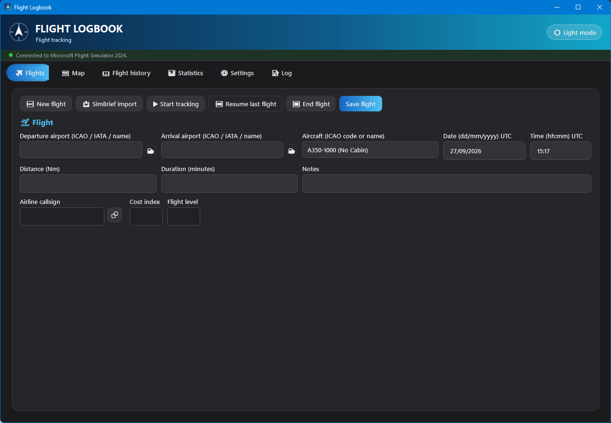
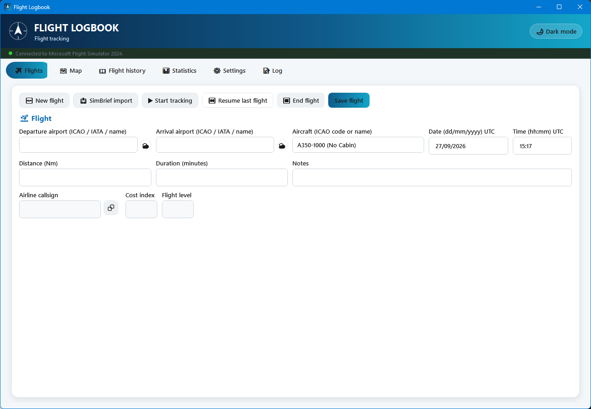
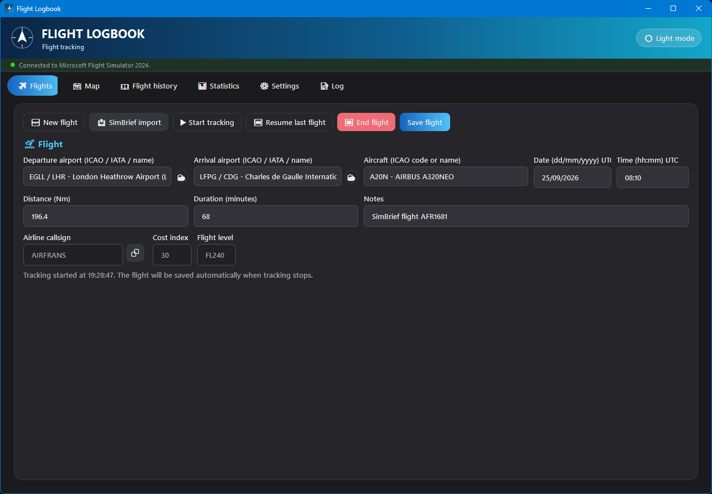
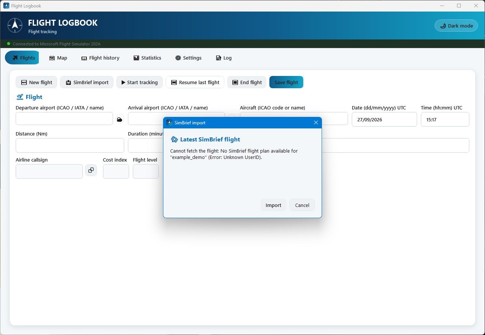
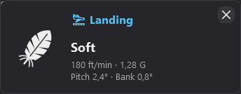
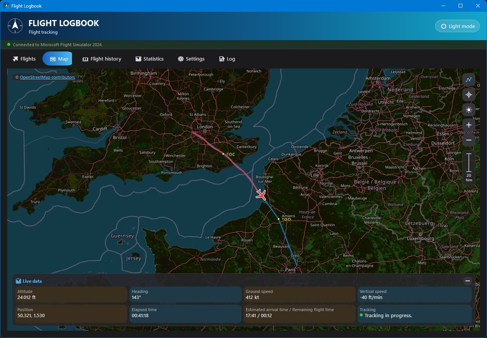
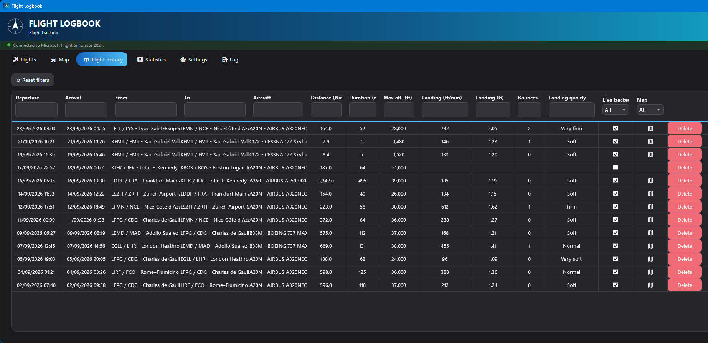
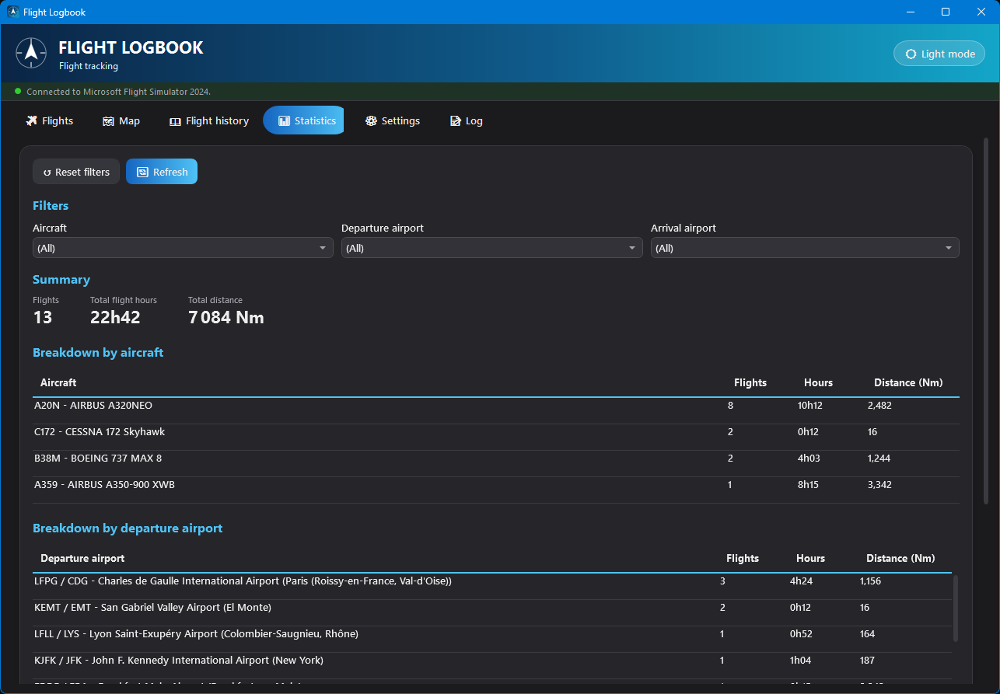
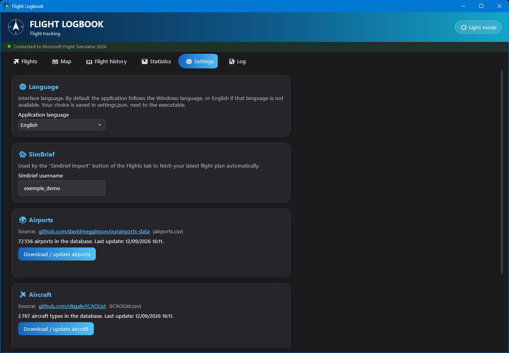
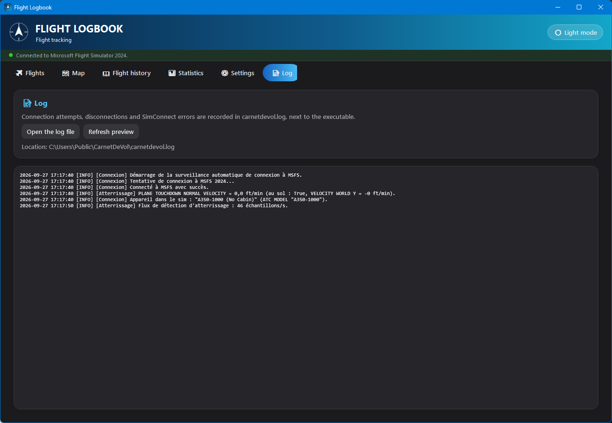

🧭 1. Overview
What Flight Logbook does, and who it is for.
Flight Logbook (Carnet de Vol) is a standalone Windows application that keeps the history of every flight you fly in Microsoft Flight Simulator 2024. It works in three complementary ways:
- Live tracking: connected to MSFS through SimConnect, it detects the takeoff, records the GPS track second by second, detects the landing and rates it, then saves the flight automatically when tracking stops.
- Manual entry: to log a flight afterwards, without live tracking.
- Import: from a SimBrief flight plan (pre-filling the form) or from a SimToolKitPro export (bulk history import).
All data stays local, in a SQLite database next to the executable — no data is sent to any server, apart from the read-only calls to SimBrief, adsbdb and aviationweather.gov described in this guide.
🚀 2. First launch
What happens automatically the first time you open the application.
On the very first start the database is empty: the application then automatically downloads, in the background, the two reference datasets the search fields need:
| Dataset | Source | Approximate size |
|---|---|---|
| Airports | ourairports-data (GitHub) | ~72,000 airports |
| Aircraft types | rikgale/ICAOList (GitHub) | ~2,800 types |
No action is required: you only need an Internet connection for this first launch. You can update them manually at any time from the Settings tab.
carnetdevol.db (your flights and the reference data),
carnetdevol.log (SimConnect connection log),
theme.txt (light/dark theme) and, once you pick a language,
settings.json. These files are not part of the installation: if
you move the executable, copy them along with it (together with the
Languages folder shipped with the application) to keep your
history and settings.
🖥️ 3. General interface
The banner, the connection indicator, the six tabs, the theme and the language.
The main window has three fixed areas, whatever the active tab:
- A banner at the top, with the 🌙 Dark mode / ☀️ Light mode button that instantly switches the whole application theme (remembered between sessions);
- Just below, a thin status bar with a coloured dot (red = not connected, green = connected) and a text showing the connection state to MSFS 2024. While it is not connected, the application retries automatically every 5 seconds, without any action from you;
- Six tabs: Flights, Map, Flight history, Statistics, Settings, Log — described in the following sections.
The application is displayed in the Windows language when it is available (English, French or Spanish, whatever the regional variant: Canadian or Belgian French, British or American English…), and in English otherwise. You can change it at any time in the Settings tab.


✈️ 4. Flights tab
The heart of the application: enter, import or record a flight live.

Manual entry
To log a flight without live tracking:
- Click 🆕 New flight to start from an empty form.
- Fill in the departure airport and the arrival airport: both fields accept an ICAO or IATA code or part of an airport name — a list of suggestions appears as you type, to pick with the mouse or the keyboard.
- Fill in the aircraft the same way (ICAO code or name).
- The distance (Nm) is computed automatically as the crow flies (great circle) as soon as departure and arrival are chosen — you can correct it by hand if needed (for example to reflect a longer actual route).
- Complete the departure UTC date/time (strict formats
dd/mm/yyyyandhh:mm), the duration in minutes, and any notes. - Click Save flight.
SimBrief import
If you plan your flights with SimBrief, the application can fetch your latest flight plan and fill in the form for you (the SimBrief API only returns the most recent flight, never a history).
- First enter your SimBrief username in the Settings tab (once).
- In the Flights tab, click 📥 SimBrief import.
- A window opens, fetches the plan and shows the route, aircraft, distance, estimated departure time, duration and airline callsign.
- Click Import to copy all these values into the form (including the planned Cost index and Flight level, read-only), or Cancel to change nothing.

Live tracking (SimConnect)
When MSFS 2024 is running and the application is connected to it (green dot in the status bar), live tracking can start in two ways:
- Automatically — as soon as the aircraft taxis (ground speed > 3 kt) near an already known departure airport (itself detected automatically within 5 Nm of the first ground position received).
- Manually — by choosing the departure airport and clicking ▶ Start tracking.
During tracking, the Map tab shows the aircraft position live and draws the path flown. As soon as the landing is detected, the Arrival airport field fills itself in with the nearest airport (within 5 Nm), if it was empty. To finish:
- Click ⏹ End flight.
- If no arrival airport was chosen, the application uses the one nearest to the current position (within 5 Nm); if none is found, select it yourself and click the button again. An arrival filled in automatically at landing is also re-evaluated at that point (useful after a touch-and-go at another airfield).
- The flight is saved automatically: actual distance flown (computed from the GPS track, not as the crow flies), duration, maximum altitude, aircraft and landing data are all filled in without manual entry.
Landing detection
During live tracking, the landing is measured on every simulator frame (about 45 times per second), not once per second:
- Touchdown vertical speed: the one measured by MSFS itself when the wheels touch, perpendicular to the runway (accurate even on a sloping runway). The main gear contact is used, not the softer nose-wheel contact.
- Load factor (G): the peak measured within 2 seconds after touchdown.
- Bounces: if the aircraft becomes airborne again and touches down again, each bounce is counted and the landing is rated on the hardest contact. Micro lift-offs of a few hundredths of a second while the gear compresses do not count, and a touch-and-go or go-around (more than 10 s airborne) is not a bounce.
- Pitch and bank at touchdown (positive pitch = nose up).
The landing is confirmed once the aircraft has stayed 3 seconds on the ground (so a possible bounce can be counted); a pop-up then shows these values, an icon and an automatic quality rating, until you close it with its cross:
| Touchdown vertical speed | Quality shown | Icon |
|---|---|---|
| < 100 ft/min | Very soft | cloud |
| 100 – 249 ft/min | Soft | feather |
| 250 – 499 ft/min | Normal | arrow to the runway |
| 500 – 699 ft/min | Firm | arrow and impacts |
| ≥ 700 ft/min | Very firm | anvil |

This rating and these values are also stored with the flight and can be viewed later in the Flight history (“Landing (ft/min)”, “Landing (G)”, “Bounces” and “Landing quality” columns), for example to filter your best — or worst — landings.
Example — a flight tracked from start to finish
- MSFS 2024 is open, with a flight loaded at the departure gate. The status bar turns green.
- The aircraft loaded in MSFS appears by itself in the Aircraft field.
- You start taxiing: the departure airport fills itself in, tracking starts automatically, and the Map tab starts drawing your position.
- In flight, you check the Live data panel (altitude, heading, speeds, ETA) directly on the map.
- Three seconds after touchdown, a pop-up shows your landing quality (touchdown speed, G, bounces, pitch) and the arrival airport fills itself in.
- Once parked, click ⏹ End flight: the flight appears immediately in the Flight history, GPS track included.
🗺️ 5. Map tab
OpenStreetMap map, live position, flight track and planned route.

Use the mouse to move around the map (drag to pan, wheel to zoom) or the buttons stacked at the top right:
| Button | Action |
|---|---|
| Planned route (dotted route icon) | Shows/hides the planned route of the imported SimBrief plan, in blue — handy to compare the route actually flown (red track) with the planned one. The planned top of climb and top of descent are marked with a yellow dot labelled TOC and TOD. |
| Recenter (crosshair icon) | Turns automatic map following of the aircraft back on. Following turns itself off as soon as you drag the map by hand, so you can look elsewhere without being forcibly “recentered”. |
| Dark map (moon/sun) | Switches the look of the OpenStreetMap tiles, independently of the application theme. |
| + / − | Zoom in / out. |
A graduated vertical scale (in Nm) is shown below these buttons as soon as the tab opens and is recomputed automatically at every zoom or position change, like on a paper chart. It keeps the width of the buttons, with the value and the unit on two lines.
At the top left, the © OpenStreetMap contributors notice credits the map data (ODbL license, see the appendix); clicking it opens the OpenStreetMap license page in your browser.
During active tracking, the Live data panel at the bottom of the map shows: altitude, heading, ground speed, vertical speed, GPS position, elapsed time, estimated arrival time / remaining flight time, and the connection state. It can be collapsed with the − button in its corner to free up space on the map.
📖 6. Flight history
All your saved flights, filterable column by column.

The table lists every saved flight, most recent first, with: departure/arrival dates, airports, aircraft, distance, duration, maximum altitude, landing data (vertical speed, G, number of bounces, quality), whether the flight was tracked live, and whether it has a GPS track.
- Filter: type in the field under any column header (contained text, case-insensitive); combine several columns at once.
- Reset: the ↺ Reset filters button clears all filters in one click.
- View the track: double-click a row to open it on the map (only if a GPS track exists).
- Delete: each row's “Delete” button asks for confirmation before a permanent, irreversible deletion.
Example — find your firmest landings
- Open Flight history.
- In the Landing quality column filter, type
firm— the list keeps only the “Firm” and “Very firm” flights (the filter checks whether the text is contained, so both labels match). - Then sort by clicking the Landing (ft/min) header to rank them from hardest to softest.
📊 7. Statistics
Totals and breakdowns, with filters by aircraft and by airport.

This tab refreshes automatically every time you select it, so it never shows outdated figures after a flight is added or deleted.
- Filters: three drop-down lists (aircraft, departure airport, arrival airport), combinable, filled automatically from your existing flights.
- Summary: number of flights, total flight hours and total distance (Nm) for the filtered selection.
- Breakdowns: three tables (by aircraft, by departure airport, by arrival airport), each with flights / hours / distance, sorted from most to least frequent.
The ↺ Reset filters button goes back to “(All)” everywhere; 🔄 Refresh forces an immediate recalculation.
⚙️ 8. Settings
Application language, SimBrief username, airport/aircraft data updates, and SimToolKitPro import.

🌐 Language
The Application language list only offers the available languages (currently English, Español and Français). The change is immediate, without restarting: menus, tabs, columns and messages switch to the new language, including the landing quality of flights already saved.
Your choice is saved in settings.json, next to the executable,
and then takes precedence over the Windows language at every launch. Delete this file to go
back to the Windows language.
Languages folder, shipped
next to the executable and named after the international language code
(fr.json, en.json). To add a language,
copy en.json under the new code (for example
de.json), translate the texts and the _name
value (name shown in the list), then restart the application. Any missing text is shown in English.
🛰️ SimBrief
The SimBrief username field is saved automatically as soon as you leave it (no “Save” button needed). This identifier is used by the SimBrief import button of the Flights tab.
🌍 Airports & 🛩️ Aircraft
Each block shows the number of entries currently in the database and the last update date, with a button to download the latest source again (ourairports-data for airports, rikgale/ICAOList for aircraft). An update never deletes your flights: it only touches the reference tables.
📥 SimToolKitPro import
If you used SimToolKitPro for your logbook before, you can import its whole history, exported as CSV, in one go:
- Make sure the airport data is up to date (a flight whose airport is missing from the reference data is skipped).
- Click Choose a CSV file and import, then select the export.
- A summary is shown: number of flights imported, duplicates already present and skipped, flights skipped because an airport was not recognised, and invalid rows skipped.
📝 9. Log
The technical history of connections to MSFS, to diagnose a connection problem.

carnetdevol.log.Every connection attempt, disconnection and SimConnect error is recorded in
carnetdevol.log, next to the executable, together with the
aircraft detected in the simulator and the details of each landing measurement (touchdown
speed reported by MSFS, final result). The log entries themselves are written in French.
Two buttons:
- Open the log file — opens it in your default text viewer, to read it in full or attach it to a bug report.
- Refresh preview — refreshes the preview shown directly in the application (the last 200 lines).
While MSFS is not running, only the first connection failure is detailed, followed by a
one-line reminder roughly every 5 minutes. Beyond 5 MB, the log is renamed to
carnetdevol.old.log (replacing the previous one) and a new file
starts.
💡 10. Tips & good practice
What the application does automatically, without any action from you
| Situation | Automatic behaviour |
|---|---|
| First launch, empty database | Download of the airport/aircraft reference data |
| No language chosen | Display in the Windows language, or in English if it is not available |
| MSFS not connected | New connection attempt every 5 seconds |
| Aircraft on the ground, departure airport unknown | Detection of the nearest airport (within 5 Nm) |
| Connected to MSFS, Aircraft field empty | Display of the aircraft loaded in the simulator |
| Aircraft starting to taxi (> 3 kt) | Tracking starts automatically |
| Landing detected, no arrival chosen | Arrival airport filled in with the nearest one |
| Tracking ended with no arrival chosen | Detection of the nearest arrival airport |
| Aircraft flown not in the reference data | Added automatically to the aircraft list |
Application files
All your data lives in files next to CarnetDeVol.exe:
To back up your history or move to a new installation, simply
copy carnetdevol.db next to the new executable.
🛠️ 11. Troubleshooting
“Not connected to MSFS 2024” never turns green
Check that Microsoft Flight Simulator 2024 is running and that a flight is loaded. Look at the Log tab: connection attempts and their errors are detailed there. Reconnection is automatic (every 5 s); no action is needed once MSFS is available.
The SimBrief import shows “Cannot fetch the flight”
Check the spelling of the SimBrief username set in the Settings tab (it is the pilot identifier used on SimBrief, not your e-mail address), and make sure a flight plan was generated recently on SimBrief with this account.
The Aircraft or Arrival airport field does not fill itself in
This is intended if it already holds a value you chose or imported from SimBrief: automatic detection never overwrites it. Click 🆕 New flight to start from an empty form. For the arrival, the aircraft must have landed within 5 Nm of an airport known to the reference data, during live tracking. The Log tab shows the aircraft detected in the simulator.
A flight in the history has no track on the map
This is normal for a flight entered manually or imported (SimBrief, SimToolKitPro): only a flight actually tracked live through SimConnect has GPS points. The “Map” column of the Flight history shows it clearly.
An airport is not found during a SimToolKitPro import
First update the airport data from the Settings tab, then run the import again: the flights previously skipped for lack of a recognised airport will be imported, without creating duplicates of the flights already imported.
A text is still in the previous language after switching
Status messages already shown (result of a save, of an import…) keep their language until the next message; everything else switches immediately.
⚖️ Appendix — Data sources and licenses
The external services used by the application, and the terms that apply to them.
Flight Logbook only makes read-only calls to the services below. Terms checked on 24/09/2026 on each service's official pages; they may change, and the links given are authoritative.
| Service | Use in the application | License / terms |
|---|---|---|
| OpenStreetMap | Base map of the Map tab (tile.openstreetmap.org tiles) | Data under the ODbL (Open Database License), “© OpenStreetMap contributors” attribution required; tile use subject to the OSMF tile usage policy. |
| OurAirports (ourairports-data) | Airport reference data (airports.csv) |
Public domain (repository under The Unlicense); provided with no guarantee of accuracy; attribution appreciated but not required. |
| rikgale/ICAOList | Aircraft type reference data (ICAOList.csv) |
No license declared by the author. The type codes themselves come from ICAO Doc 8643 (Aircraft Type Designators). The list is only used for aircraft search, locally. |
| SimBrief (Navigraph) | Import of your latest flight plan (xml.fetcher.php) |
Subject to the Navigraph terms of service and developer terms: simulation use only, forbidden for real-world navigation and for logging flight hours towards a pilot license; do not overload the API. SimBrief is a trademark of Navigraph. |
| adsbdb | Airline radio callsign during a SimBrief import | Open source project under the MIT license (source code); free public API with no published terms of use. Data from third-party sources credited by the project. |
| aviationweather.gov (NOAA / NWS) | METAR shown when hovering over the ⛅ weather icon | National Weather Service information in the public domain (NWS disclaimer), provided “as is”, with no warranty; limit of 100 requests per minute. |
%LocalAppData%\GMap.NET),
offers no offline map download, and always shows the OpenStreetMap attribution, legibly,
in the top-left corner of the map, with a link to the license page. SimBrief, adsbdb and
METAR calls are only made at your request (import button, hovering over the weather icon).
Microsoft Flight Simulator 2024 and SimConnect are trademarks of Microsoft; Flight Logbook is not affiliated with Microsoft, Navigraph or the other services mentioned.